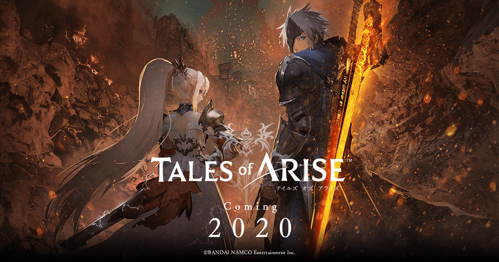

Tales of Series Memory
TOP
GAMES
EXTRA
テイルズオブアライズ
 2020年発売予定
プラットフォーム：PS4 , Xbox One , Win
シリーズ25周年記念作品（予定）。
世界観の説明と主人公とヒロインのビジュアル・声が発表されているものの、詳しい情報はまだ分からないままである。プラットフォームからPS3が無くなっているため、PS4基準のグラフィックで制作されていると思われる。
続報を待つ。
作成者：竹内瞳 更新日：2020/02/03